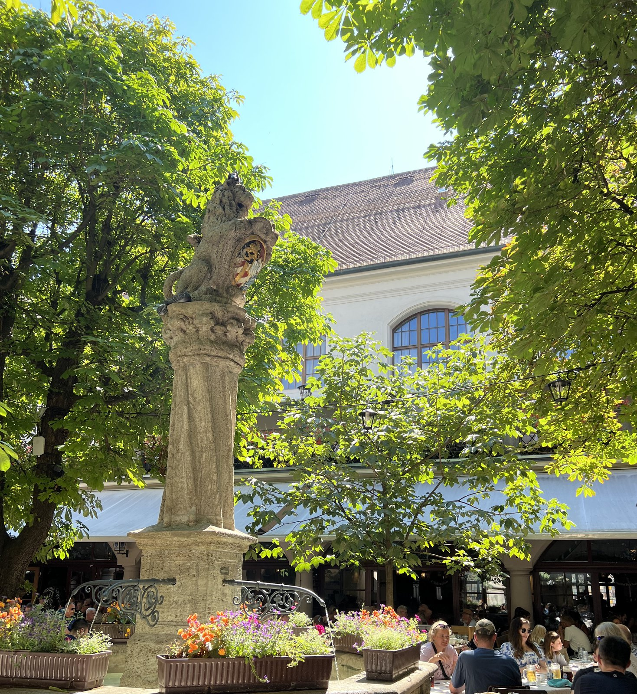
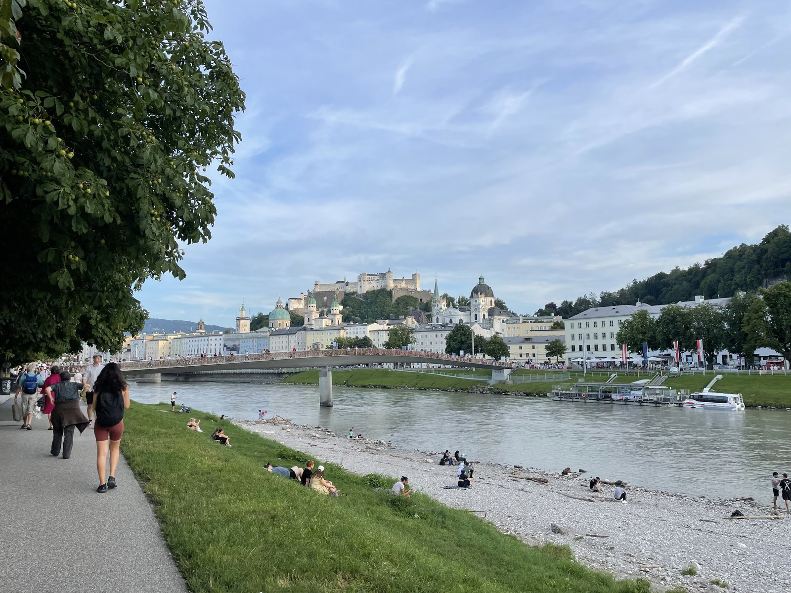
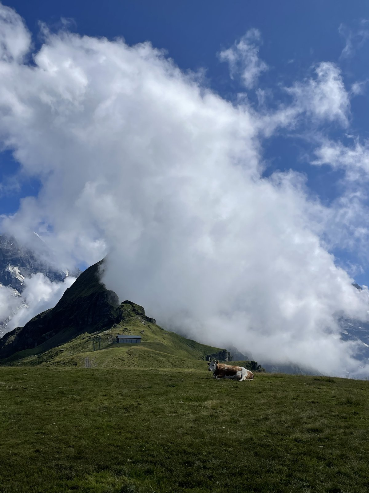
Favorite trip
Europe Summer
In Germany, Austria, Slovenia, and Switzerland
I was born in Chengdu, and have spent roughly equal amount of my living years in Chengdu, Beijing, LA, SF, and now Boston! Here are some of my current favorites from life so far 😸



In Germany, Austria, Slovenia, and Switzerland
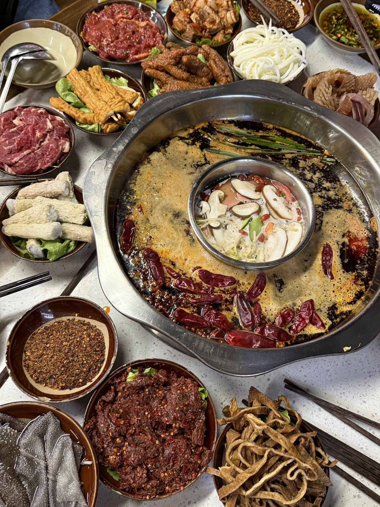
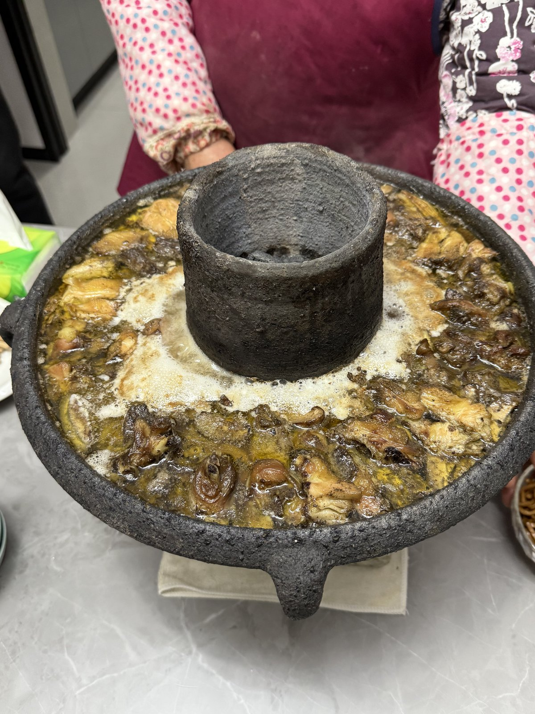
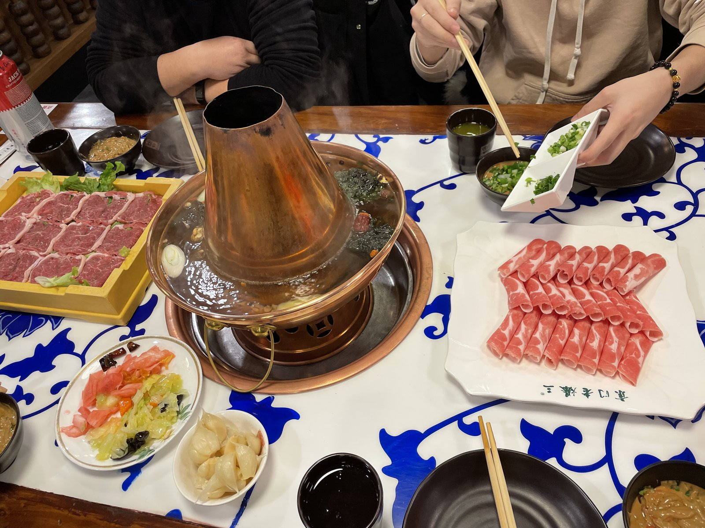
Top 3 Sichuan Hotpot I've had in the US: Longmen Bay (SF), Qiaolin (BOS), Chongqing Laozao (NYC)
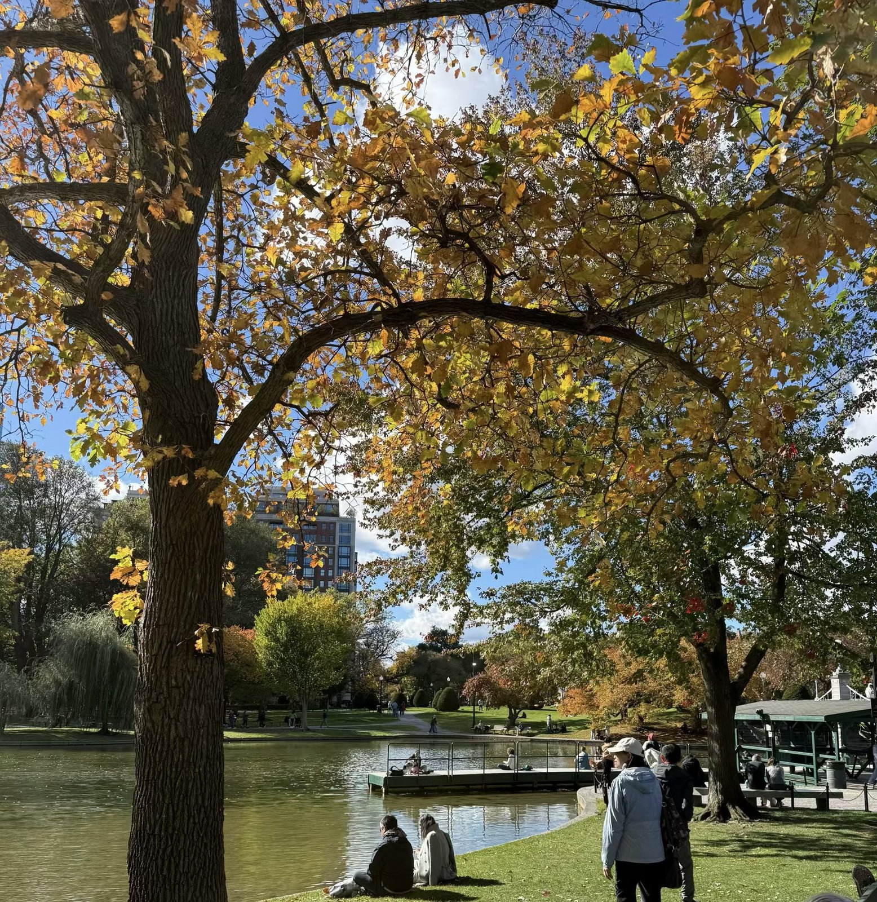
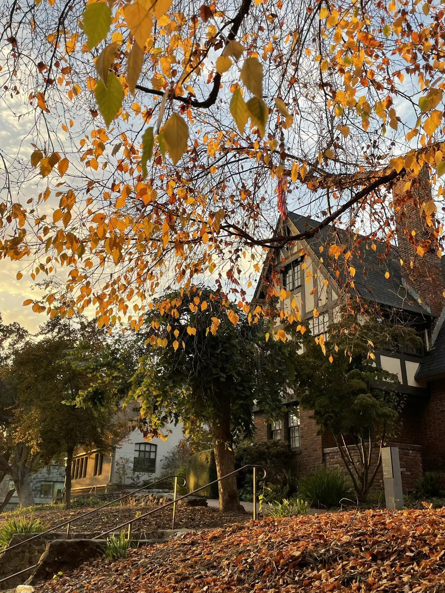
For the immaculate weather and the beautiful foliage
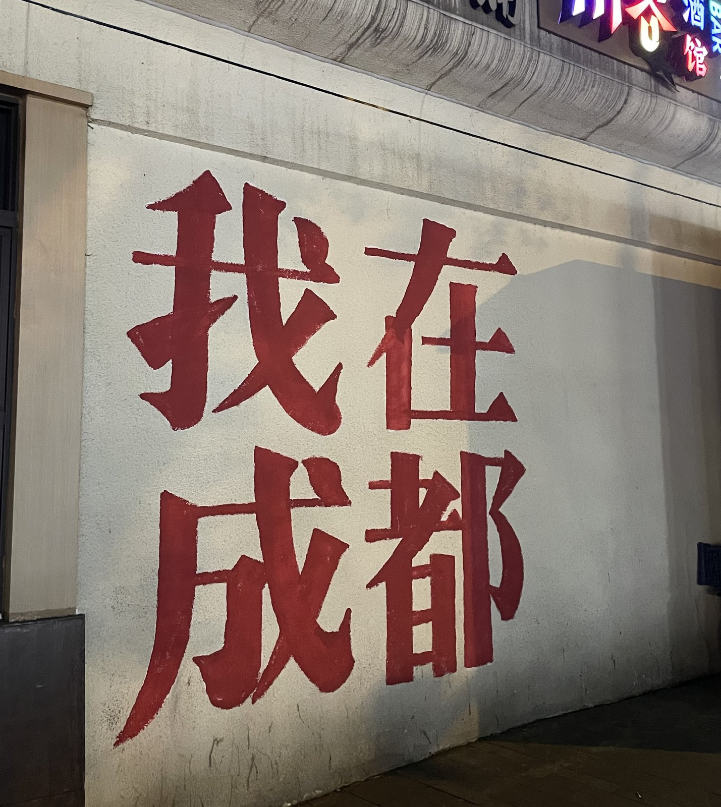
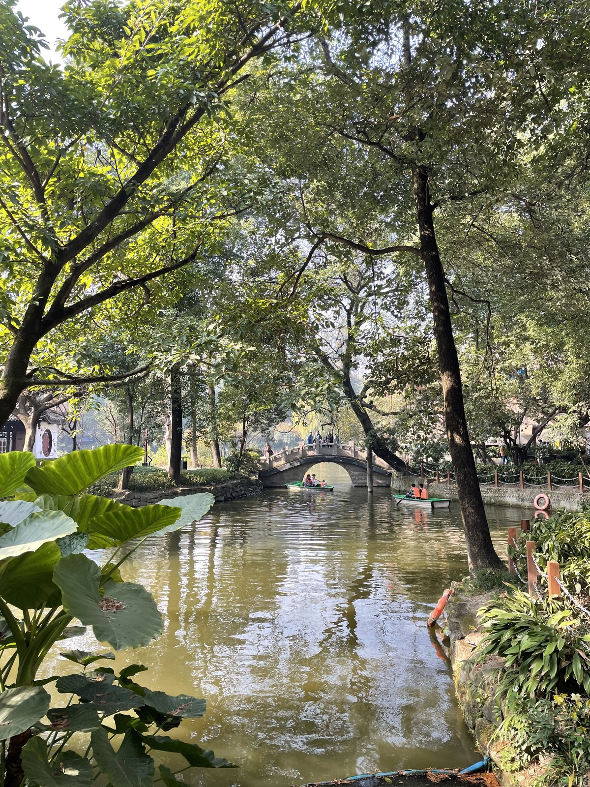
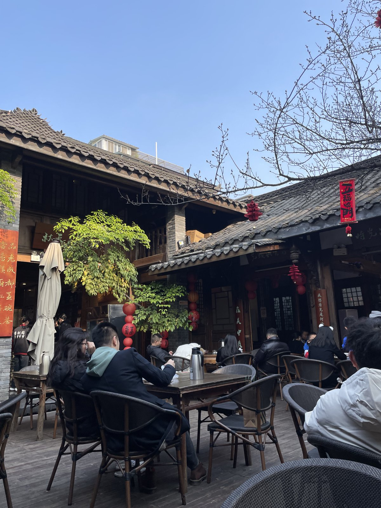
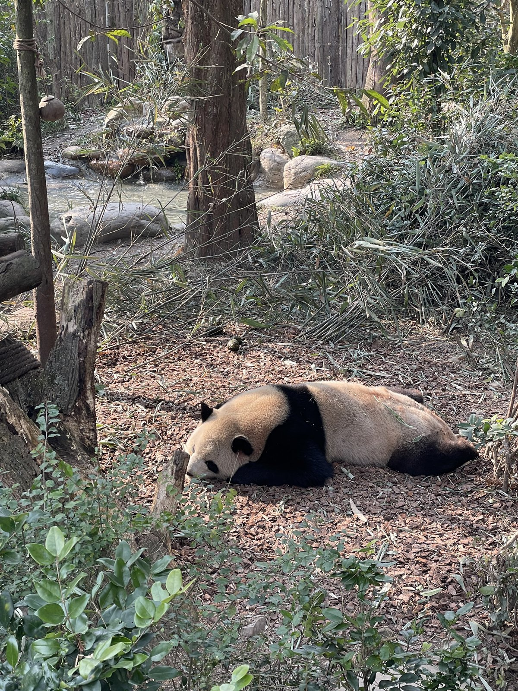
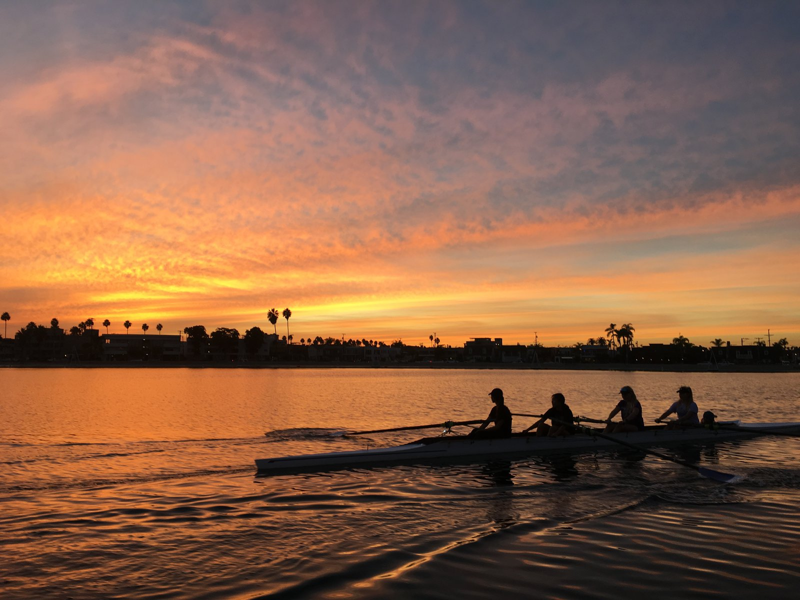
I was a competitive rower in high school and trained on the same course as the LA 28 Olympics! I have been following the sport since and got to meet my rowing celebrity crush at HOCR 2026.